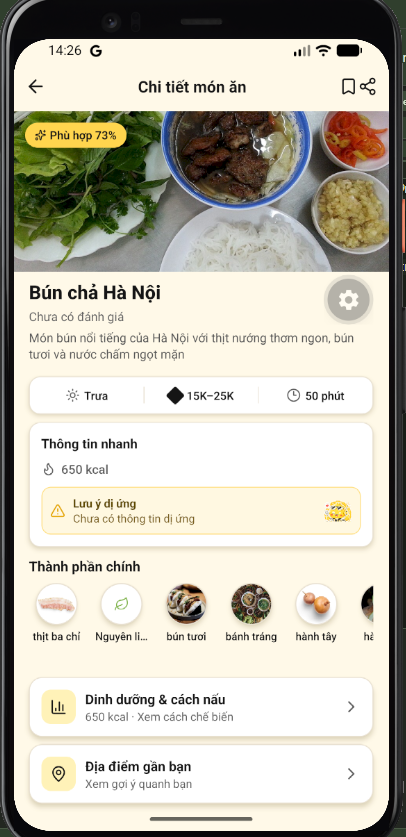

Ảnh hiện tại của MoguBún chả Hà Nội
Thịt nướng thơm, bún tươi và nước chấm chua ngọt. Một bữa trưa đậm vị Hà Nội.
Thịt ba chỉ, thịt nạc, bún tươi, rau sống, đu đủ xanh và gia vị.
Nguồn & thông tin món
Prototype sử dụng ảnh bạn cung cấp. Công thức và số liệu chỉ minh họa bố cục, chưa xác minh để sử dụng thực tế. Chưa có đánh giá món.
Thông tin đủ để chọn món. Giá có đơn vị rõ ràng. Dinh dưỡng mở thêm khi cần, không chiếm một màn riêng.
Bạn nấu cho mấy người?
Đã có 0 / 12 nguyên liệu
Thay 15 ô ảnh bằng danh sách tên + lượng. Không cắt tên nguyên liệu; tăng khẩu phần sẽ đổi định lượng.
Chữ lớn, đúng nguyên liệu của bước, timer thật trong prototype. Không lặp ảnh bìa hay nút video không có video.
Bún chả gần bạn
2 quán minh họa · Không phải kết quả tìm kiếm thực tế
Danh sách trước, bản đồ theo nhu cầu. Chỉ đường theo từng quán. Đánh giá quán không trộn với đánh giá món.